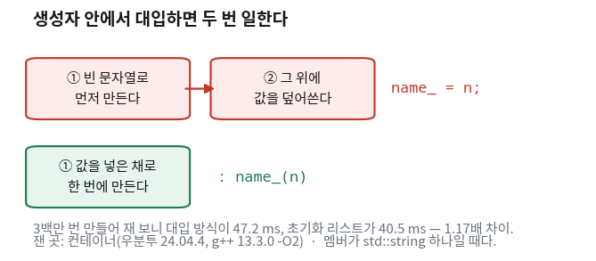
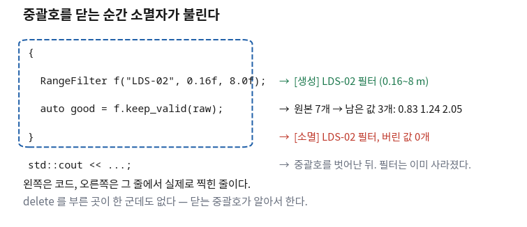

클래스 — 노드가 상태를 갖는 방식
- 함수만으로도 되는데 왜 굳이 클래스로 묶나?
- 생성자 안에서 값을 넣는 것과 콜론 뒤에서 넣는 것은 무엇이 다른가?
- 객체는 언제 만들어지고 언제 사라지나?
- 왜 파일을
.hpp와.cpp두 개로 나누나?
ROS 2 코드는 거의 전부가 클래스다.
라이다에서 값을 받는 프로그램 하나가 class LidarNode : public rclcpp::Node로 시작한다.
3부에 가서 그 코드를 검사하려면 클래스가 무엇을 하는 문법인지부터 알아야 한다.
클래스를 배우는 이유는 "객체지향"이라는 말 때문이 아니다. 로봇 프로그램은 값을 계속 들고 있어야 하기 때문이다. 라이다 값이 들어올 때마다 "거리 범위는 얼마인지", "지금까지 몇 개를 버렸는지"를 알고 있어야 한다. 그 값을 어디에 둘 것인가가 오늘의 질문이다.
오늘 만드는 것은 라이다 값에서 못 쓰는 것을 걸러내는 필터 하나다. 파일 세 개로 나눠 만들고, 실제로 빌드해서 돌린다. 그리고 마지막에 파일이 둘 이상이 되는 순간 빌드가 깨지는 것을 일부러 겪는다.
한 장 요약 — 클래스에서 볼 자리는 다섯 군데다
무엇을 먼저 볼지: 맨 오른쪽 「검사할 때 보는 것」 열이 이 회차의 결론이다. 받은 코드에서 이 다섯 가지만 확인하면 된다.
| 자리 | 코드에서 이렇게 보인다 | 검사할 때 보는 것 | 수준 |
|---|---|---|---|
| 멤버 변수 | float lo_; (이름 뒤에 밑줄) |
객체가 들고 있어야 할 값만 멤버인가 | [판단] |
| 생성자 | RangeFilter(const std::string & name, float lo, float hi); |
만들 때 꼭 필요한 값을 다 받는가 | [판단] |
| 멤버 초기화 리스트 🔴 | : name_(name), lo_(lo), hi_(hi) |
생성자 중괄호 안에서 대입하고 있지 않은가 | [요구] |
| 소멸자 | ~RangeFilter(); |
중괄호를 벗어날 때 정리가 되는가 | [알아보기] |
public / private |
클래스 안의 구역 표시 | 멤버 변수가 밖에 노출돼 있지 않은가 | [판단] |
| 헤더 / 소스 분리 | range_filter.hpp + range_filter.cpp |
헤더에 함수 본문이 들어가 있지 않은가 | [요구] |
① 값과 함수가 흩어져 있으면 고칠 때 터진다 🔴 사람이 한다
언제 이게 필요해지나
라이다 값에서 못 쓰는 것을 걸러내는 프로그램을 만든다. 걸러내려면 기준값 두 개(가장 가까운 거리, 가장 먼 거리)가 필요하고, 몇 개를 버렸는지도 세어 두고 싶다. 클래스를 모르면 이렇게 짜게 된다.
#include <cmath>
#include <cstdio>
#include <string>
#include <vector>
std::string g_name = "LDS-02"; // 이 필터가 누구 것인가
float g_lo = 0.16f; // 이보다 가까우면 버린다
float g_hi = 8.0f; // 이보다 멀면 버린다
int g_dropped = 0; // 지금까지 버린 개수
std::vector<float> keep_valid(const std::vector<float> & ranges)
{
std::vector<float> good;
for (const float r : ranges) {
if (std::isfinite(r) && r >= g_lo && r <= g_hi) { good.push_back(r); }
else { ++g_dropped; }
}
return good;
}🆕 이 코드에서 처음 나오는 것
- for (const float r : ranges)
- 그릇 안의 값을 처음부터 끝까지 하나씩 꺼내
r에 담아 준다. 인덱스를 직접 세지 않으므로 범위를 넘어가는 실수가 생기지 않는다. - good.push_back(r)
- 그릇 뒤에 값을 하나 더 붙인다. 여기서는 쓸 만하다고 판단한 거리 값만 골라 담는 데 썼다.
- g_ 로 시작하는 이름
- 함수 밖에 놓여 프로그램 어디에서나 보이는 값이라는 표시다(전역 변수). 이 회차는 이것이 왜 나쁜지를 보여 주는 것으로 시작한다.
제대로 다루는 곳: 12회(std::vector와 범위 for)
돌려 보면 잘 된다 — 그게 문제다
$ g++ -std=c++17 -O2 -o scattered scattered.cpp
$ ./scattered
LDS-02: 원본 7개 → 남은 값 3개, 버린 값 4개무엇을 먼저 볼지: 오른쪽 열이 "언제 터지나"다. 지금이 아니라 나중에 터진다.
| 무엇이 걸리나 | 언제 터지나 |
|---|---|
| 라이다를 두 개 달면 이 코드는 못 쓴다 | 기준값이 하나뿐이라 앞 라이다와 뒤 라이다를 따로 못 쓴다. 프로젝트 후반에 터진다 |
g_dropped를 아무나 고칠 수 있다 |
다른 파일에서 실수로 g_dropped = 0;을 해도 컴파일이 된다 |
| 어떤 값이 어떤 함수와 짝인지 코드에 안 적혀 있다 | 함수가 열 개로 늘면 사람이 외우고 있어야 한다 |
| 값을 언제 초기화하는지 정해진 자리가 없다 | 초기화를 빠뜨려도 그냥 돌아간다. 값이 이상할 뿐이다 |
class 한 줄이다.
이미 이렇게 흩어진 코드를 받았다면 고치는 일 자체는 에이전트에게 맡길 수 있다. 무엇을 기준으로 묶을지만 정해 주면 된다.
private으로 해 줘.
② 헤더는 "무엇이 있는지"만 적는다 🟡 맡기되 검사
같은 일을 클래스로 다시 짠다. 파일을 두 개로 나눈다.
먼저 헤더(range_filter.hpp)다. 여기에는 목록만 있다.
무슨 함수가 있고 무슨 값을 들고 있는지만 적고, 어떻게 하는지는 안 적는다.
// 8회 — 헤더(.hpp): 무엇이 있는지만 적는다
#ifndef RANGE_FILTER_HPP_
#define RANGE_FILTER_HPP_
#include <string>
#include <vector>
class RangeFilter
{
public:
RangeFilter(const std::string & name, float lo, float hi);
~RangeFilter();
std::vector<float> keep_valid(const std::vector<float> & ranges) const;
int dropped() const;
private:
std::string name_; // 이 필터가 누구 것인가
float lo_; // 이보다 가까우면 버린다
float hi_; // 이보다 멀면 버린다
int dropped_ = 0; // 지금까지 버린 개수
};
#endif // RANGE_FILTER_HPP_🆕 이 코드에서 처음 나오는 것
- #ifndef RANGE_FILTER_HPP_ / #define RANGE_FILTER_HPP_ / #endif
- 세 줄이 한 세트다(포함 보호). "이 이름을 아직 못 봤으면 아래를 읽고, 이미 봤으면 통째로 건너뛰라"는 뜻이다. 같은 헤더가 두 번 들어와도 내용이 한 번만 읽히게 만든다.
- RangeFilter(...); ← 세미콜론으로 끝난다
- 클래스 이름과 같은 함수가 생성자다. 객체를 만들 때 자동으로 불린다. 헤더에서는 세미콜론으로 끝난다 — "있다"고만 적은 것이다.
- ~RangeFilter();
- 이름 앞에 물결표가 붙으면 소멸자다. 객체가 사라질 때 자동으로 불린다.
- int dropped_ = 0;
- 멤버 변수에 기본값을 헤더에서 바로 적어 둔 것이다. 생성자에서 따로 안 채워도 0으로 시작한다.
같은 헤더를 두 번 #include하고 포함 보호가 없으면 이렇게 된다.
$ g++ -std=c++17 m.cpp -o y
In file included from m.cpp:2:
guard.hpp:1:8: error: redefinition of ‘struct Scan’
1 | struct Scan { float front; };
| ^~~~
In file included from m.cpp:1:
guard.hpp:1:8: note: previous definition of ‘struct Scan’
redefinition은 "같은 것을 두 번 정의했다"는 뜻이다.
실제 프로젝트에서는 내가 두 번 적지 않아도 이 일이 생긴다 —
헤더 A가 C를 읽고, 헤더 B도 C를 읽고, 내 파일이 A와 B를 둘 다 읽으면 C가 두 번 들어온다.
그래서 헤더에는 예외 없이 포함 보호를 붙인다. AI가 준 헤더에 이 세 줄이 없으면 붙여 달라고 하면 된다.
무엇을 먼저 볼지: 맨 왼쪽 열이 「보이나」다. 헤더만 읽어도 알 수 있는 것이 이만큼이다.
| 헤더를 읽으면 알 수 있는 것 | 헤더만으로는 알 수 없는 것 |
|---|---|
| 이 필터를 만들려면 이름·최소·최대 세 개를 줘야 한다 | 거른다는 게 정확히 무슨 계산인지 |
keep_valid에 거리 배열을 주면 배열이 돌아온다 | 못 쓰는 값을 어떤 기준으로 판단하는지 |
몇 개 버렸는지 물어볼 수 있다 (dropped()) | 버린 개수를 어디서 세는지 |
| 안에 값 네 개를 들고 있다 | 그 값들이 어떻게 쓰이는지 |
rclcpp의 헤더만 읽고 안쪽 코드는 안 본다.
③ 소스는 "어떻게 하는지"를 적는다 🟡 맡기되 검사
같은 클래스의 소스 파일(range_filter.cpp)이다. 헤더에 적어 둔 함수들의 내용이 여기 있다.
// 8회 — 소스(.cpp): 실제로 어떻게 하는지를 적는다
#include "range_filter.hpp"
#include <cmath>
#include <iostream>
// 멤버 초기화 리스트 — 콜론 뒤가 그것이다. 만들면서 바로 값을 넣는다.
RangeFilter::RangeFilter(const std::string & name, float lo, float hi)
: name_(name), lo_(lo), hi_(hi)
{
std::cout << "[생성] " << name_ << " 필터 (" << lo_ << "~" << hi_ << " m)\n";
}
RangeFilter::~RangeFilter()
{
std::cout << "[소멸] " << name_ << " 필터, 버린 값 " << dropped_ << "개\n";
}
std::vector<float> RangeFilter::keep_valid(const std::vector<float> & ranges) const
{
std::vector<float> good;
good.reserve(ranges.size());
for (const float r : ranges) {
if (std::isfinite(r) && r >= lo_ && r <= hi_) {
good.push_back(r);
}
}
return good;
}
int RangeFilter::dropped() const { return dropped_; }🆕 이 코드에서 처음 나오는 것
- RangeFilter::keep_valid(...)
- 가운데
::가 "이 함수는RangeFilter의 것"이라는 표시다. 헤더에 적어 둔 목록의 그 함수를 여기서 채우고 있다는 뜻이다. 이 표시를 빠뜨리면 전혀 다른 함수가 하나 생긴다 — 컴파일은 되고 링크에서 터진다. - good.reserve(ranges.size())
- 담을 개수를 미리 알려 줘 자리를 한 번에 잡아 두는 것이다. 안 하면 값을 넣는 동안 그릇이 여러 번 이사를 간다.
- 함수 이름 뒤의 const
keep_valid(...) const의 뒤쪽const는 "이 함수는 이 객체가 들고 있는 값을 안 바꾼다"는 약속이다.
제대로 다루는 곳: 12회(reserve가 얼마나 이득인지 측정) · 14회(const 멤버 함수)
뒤에서 이 프로그램을 돌리면 「버린 값 0개」가 찍힌다. 그런데 입력 7개 중 4개가 걸러졌다. 0개일 리가 없다.
keep_valid 안에 dropped_를 늘리는 줄이 아예 없기 때문이다.
그럼 그 줄을 넣으면 되지 않나? 넣어 봤다.
$ g++ -std=c++17 -c range_filter.cpp
range_filter.cpp: In member function ‘std::vector<float> RangeFilter::keep_valid(...) const’:
range_filter.cpp:27:9: error: increment of member ‘RangeFilter::dropped_’ in read-only object
27 | ++dropped_; // 버린 개수를 세어 보려 했다
| ^~~~~~~~
함수 이름 뒤에 붙은 const 때문이다.
"이 함수는 값을 안 바꾼다"고 약속해 놓고 바꾸려 했으니 컴파일러가 막았다.
여기서 판단이 갈린다. 둘 중 하나를 골라야 한다 —
(가) 개수 세기를 포기하고 const를 지킨다.
(나) const를 떼고 개수를 센다. 대신 이 함수는 이제 "값을 바꾸는 함수"가 된다.
어느 쪽도 정답이 아니다. 이것이 사람이 하는 판단이다.
AI는 대개 (나)를 고른다 — 시킨 일이 되게 만드는 쪽이기 때문이다.
const가 왜 붙어 있었는지는 묻지 않는다.
④ 콜론 뒤에서 초기화하면 일을 한 번만 한다 🔴 사람이 한다
언제 이게 필요해지나
생성자에서 멤버 변수에 값을 넣는 방법이 두 가지다. 둘 다 컴파일되고, 둘 다 같은 결과를 낸다. 그래서 AI가 자주 아무 쪽이나 고른다.
struct Assigned { // 생성자 안에서 대입한다 — 두 번 일한다
std::string name_;
explicit Assigned(const std::string & n) { name_ = n; }
};struct Initialized { // 초기화 리스트로 만든다 — 한 번에 만든다
std::string name_;
explicit Initialized(const std::string & n) : name_(n) {}
};🆕 이 코드에서 처음 나오는 것
- explicit
- "이 생성자를 몰래 쓰지 마라"는 표시다. 이게 없으면 문자열을 넣어야 할 자리에 실수로 다른 것을 넣어도 컴파일러가 조용히 객체를 만들어 버린다. 인자가 하나인 생성자에는 붙이는 것이 기본이다.
- struct 와 class 의 차이
- 거의 같다. 딱 하나, 기본 공개 여부가 다르다 —
struct는 안 적으면public,class는 안 적으면private다. 여기서는 값을 재는 것이 목적이라 짧게 쓰려고struct를 썼다.
무엇이 문제인가
위쪽 코드는 중괄호에 들어가기 전에 name_이 이미 만들어져 있다.
빈 문자열로 한 번 만들어지고, 그다음 중괄호 안에서 값을 덮어쓴다. 두 번 일한다.

얼마나 차이가 나는지 재 봤다
문자열 멤버 하나를 300만 번 만들면서 두 방식의 시간을 비교했다.
시간은 std::chrono::steady_clock이라는 뒤로 가지 않는 시계로
계산 앞뒤의 시각을 읽어 그 차이를 밀리초로 꺼내 잰다.
// 8회 — 멤버 초기화 리스트가 실제로 얼마나 이득인가
#include <chrono>
#include <cstdio>
#include <string>
struct Assigned { // 생성자 안에서 대입한다 — 두 번 일한다
std::string name_;
explicit Assigned(const std::string & n) { name_ = n; }
};
struct Initialized { // 초기화 리스트로 만든다 — 한 번에 만든다
std::string name_;
explicit Initialized(const std::string & n) : name_(n) {}
};
template<typename T>
double measure(const char * label, int loops)
{
const std::string src("velodyne_lidar_front_left_link"); // 짧은 문자열 최적화를 넘기는 길이
const auto t0 = std::chrono::steady_clock::now();
size_t sink = 0;
for (int i = 0; i < loops; ++i) {
T obj(src);
sink += obj.name_.size();
}
const auto t1 = std::chrono::steady_clock::now();
const double ms = std::chrono::duration<double, std::milli>(t1 - t0).count();
std::printf("%-22s %8.1f ms (합 %zu)\n", label, ms, sink);
return ms;
}
int main()
{
const int LOOPS = 3000000;
const double a = measure<Assigned>("생성자 안에서 대입", LOOPS);
const double b = measure<Initialized>("초기화 리스트", LOOPS);
std::printf("대입 방식이 %.2f배 느리다 (%d회 기준)\n", a / b, LOOPS);
return 0;
}🆕 이 코드에서 처음 나오는 것
- template<typename T>
- "타입을 나중에 정하는 함수"를 만드는 문법이다.
여기서는 같은 재는 코드를 두 구조체에 그대로 쓰려고 썼다.
measure<Assigned>(...)라고 부르면 꺾쇠 안의 것이T자리에 들어간다. 지금은 모양만 봐 두면 된다. - const char * label
- 옛날 방식의 글자 표현이다.
std::string과 달리 글자가 있는 자리만 가리킨다.std::printf가 이 모양만 받기 때문에 여기서 썼다. - size_t
- 개수와 크기를 담는 정수 타입이다. 음수가 없다.
.size()가 돌려주는 것이 이 타입이다.
제대로 다루는 곳: 14회(템플릿 만들기 — 읽을거리로 둔다)
실제로 나온 출력
생성자 안에서 대입 47.2 ms (합 90000000)
초기화 리스트 40.5 ms (합 90000000)
대입 방식이 1.17배 느리다 (3000000회 기준)-O2)
무엇을 먼저 볼지: 가운데 열이 "차이가 나나"다. 위 두 줄은 차이가 없다.
| 멤버가 무엇일 때 | 차이가 나나 | 왜 |
|---|---|---|
float, int, bool | 거의 없다 | 만드는 데 드는 일 자체가 없다 |
| 포인터 | 거의 없다 | 같은 이유다 |
std::string | 있다 (1.17배) | 빈 문자열을 한 번 만들고 버린다 |
std::vector | 있다 | 같은 이유다. 크기가 클수록 커진다 |
const가 붙은 멤버 | 대입 자체가 안 된다 | 초기화 리스트 말고는 방법이 없다 |
참조(&) 멤버 | 대입 자체가 안 된다 | 같은 이유다 |
const 멤버나 참조 멤버가 있으면 대입 방식은 아예 컴파일이 안 된다.
그래서 "항상 초기화 리스트"를 규칙으로 두면 이 경우를 따로 기억할 필요가 없다.
예외를 두지 않는 편이 외울 것이 적다.
이렇게 말하면 된다
: hi_(hi), lo_(lo), name_(name)이라고 적어도 컴파일된다.
그런데 실제로 만들어지는 순서는 헤더에 선언한 순서다. 내가 적은 순서가 아니다.
평소에는 아무 문제가 없다. 한 멤버가 다른 멤버를 쓸 때 터진다 —
: width_(hi_ - lo_), lo_(lo), hi_(hi)라고 쓰면
lo_와 hi_가 아직 안 만들어졌는데 width_가 그것을 읽는다.
쓰레기 값이 들어가고, 컴파일러는 대개 아무 말도 안 한다.
그래서 위 프롬프트에 "선언 순서와 초기화 순서도 맞춰 줘"를 넣어 둔 것이다.
⑤ 쓰는 쪽은 헤더 한 줄만 읽으면 된다 🟢 맡긴다
// 8회 — 쓰는 쪽. 헤더만 include 하면 된다.
#include "range_filter.hpp"
#include <cmath>
#include <iostream>
int main()
{
const std::vector<float> raw{0.10f, 0.83f, INFINITY, 1.24f, 9.90f, NAN, 2.05f};
{
RangeFilter f("LDS-02", 0.16f, 8.0f);
const std::vector<float> good = f.keep_valid(raw);
std::cout << "원본 " << raw.size() << "개 → 남은 값 " << good.size() << "개: ";
for (const float r : good) { std::cout << r << " "; }
std::cout << "\n";
} // 여기서 중괄호가 닫히면 소멸자가 불린다
std::cout << "중괄호를 벗어난 뒤. 필터는 이미 사라졌다.\n";
return 0;
}
맨 위 #include "range_filter.hpp" 한 줄이 전부다.
range_filter.cpp는 여기서 언급조차 안 한다.
걸러내는 방법이 바뀌어도 이 파일은 한 글자도 안 고친다.
raw에 넣은 값 일곱 개를 보면 이 필터가 무엇을 걸러야 하는지 보인다 —
0.10은 너무 가깝고, 9.90은 너무 멀고,
INFINITY와 NAN은 라이다가 측정에 실패했을 때 보내는 값이다.
남아야 할 것은 세 개다.
빌드하고 돌린 결과
$ g++ -std=c++17 -O2 -o app main.cpp range_filter.cpp
$ ./app
[생성] LDS-02 필터 (0.16~8 m)
원본 7개 → 남은 값 3개: 0.83 1.24 2.05
[소멸] LDS-02 필터, 버린 값 0개
중괄호를 벗어난 뒤. 필터는 이미 사라졌다.0.83 1.24 2.05 세 개다. 예상대로다.
「버린 값 0개」는 앞 절 함정 상자에서 본 그 문제다 — const 멤버 함수라 개수를 못 셌다.
출력이 이상하면 코드를 의심하는 것이 이 강의가 요구하는 태도다. "그런가 보다" 하고 넘기지 않는다.
⑥ 중괄호를 닫는 순간 소멸자가 불린다 🟡 맡기되 검사
위 출력에서 세 번째 줄과 네 번째 줄의 순서를 본다.
[소멸]이 먼저 찍히고 중괄호를 벗어난 뒤가 나중에 찍혔다.
main.cpp에는 소멸자를 부르는 줄이 한 군데도 없다.

[생성]이 찍히고, 상자를 나오는 줄에서 [소멸]이 찍힌다.
상자 밖의 마지막 줄은 필터가 이미 사라진 뒤에 실행된 것이다.
무엇을 먼저 볼지: 가운데 열이 "누가 부르나"다. 전부 「아무도 안 부른다」다.
| 언제 | 무엇이 불리나 | 내가 코드를 써야 하나 |
|---|---|---|
RangeFilter f(...)라고 쓴 줄 | 생성자 | 아니다. 만들면 자동이다 |
| 중괄호를 닫는 줄 | 소멸자 | 아니다. 나가면 자동이다 |
함수가 return하는 줄 | 그 함수 안에서 만든 것들의 소멸자 | 아니다 |
| 중간에 오류로 함수를 빠져나갈 때 | 소멸자 (그래도 불린다) | 아니다 |
⑦ private는 밖에서 못 건드리게 막는 것이다 🟡 맡기되 검사
헤더의 public:과 private:는 구역 표시다.
그 아래에 적은 것들이 그 구역에 들어간다.
무엇을 먼저 볼지: 오른쪽 열이 판단 기준이다.
| 구역 | 무엇을 넣나 | 판단 기준 |
|---|---|---|
public: |
생성자, 소멸자, keep_valid, dropped |
밖에서 쓸 일이 있는 것만 |
private: |
name_, lo_, hi_, dropped_ |
멤버 변수는 기본적으로 전부 여기 |
실제로 밖에서 private 멤버를 건드리면 이렇게 된다.
RangeFilter f("LDS-02", 0.16f, 8.0f);
f.lo_ = 0.0f; // private 멤버를 밖에서 건드리려 했다$ g++ -std=c++17 -c priv.cpp
priv.cpp: In function ‘int main()’:
priv.cpp:5:5: error: ‘float RangeFilter::lo_’ is private within this context
5 | f.lo_ = 0.0f; // private 멤버를 밖에서 건드리려 했다
| ^~~
In file included from priv.cpp:1:
range_filter.hpp:19:9: note: declared private here
19 | float lo_; // 이보다 가까우면 버린다
| ^~~private로 정해졌는지를 둘 다 알려 준다.
note: declared private here 줄이 헤더 19줄을 가리킨다.
C++ 오류 메시지는 길지만, 아래쪽 note: 줄에 대개 답이 있다.
왜 굳이 막나? 앞 절의 g_dropped를 생각하면 된다.
아무나 고칠 수 있는 값은 이상해졌을 때 범인을 찾을 수 없다.
private로 막아 두면 그 값을 바꿀 수 있는 코드가 이 클래스 안으로 한정된다.
찾아야 할 범위가 프로그램 전체에서 파일 하나로 줄어든다.
밖에서 값을 읽기만 해야 할 때는 dropped()처럼 읽어 주는 함수를 하나 만들어 둔다.
읽는 것은 되고 쓰는 것은 안 되는 상태가 이렇게 만들어진다.
⑧ 파일이 둘이 되는 순간 g++ main.cpp로는 안 된다 🔴 사람이 한다
여기까지 잘 왔는데, 지금까지 쓰던 컴파일 방법이 갑자기 안 먹는다. 6·7회에서는 파일이 하나여서 이렇게만 하면 됐다.
$ g++ -std=c++17 main.cpp -o app같은 방법으로 오늘 만든 것을 빌드해 봤다. 실제로 나온 결과다.
$ g++ -std=c++17 main.cpp -o /tmp/a
/usr/bin/ld: /tmp/ccVERSQd.o: in function `main':
main.cpp:(.text+0x110): undefined reference to `RangeFilter::RangeFilter(
std::__cxx11::basic_string<char, std::char_traits<char>, std::allocator<char> > const&, float, float)'
/usr/bin/ld: main.cpp:(.text+0x149): undefined reference to `RangeFilter::keep_valid(
std::vector<float, std::allocator<float> > const&) const'
/usr/bin/ld: main.cpp:(.text+0x2ab): undefined reference to `RangeFilter::~RangeFilter()'
/usr/bin/ld: main.cpp:(.text+0x381): undefined reference to `RangeFilter::~RangeFilter()'
collect2: error: ld returned 1 exit status이 오류를 읽는 법
무엇을 먼저 볼지: 왼쪽 열의 세 조각만 찾으면 원인이 나온다.
| 메시지의 이 조각 | 무슨 뜻인가 |
|---|---|
/usr/bin/ld: | 빌드의 마지막 단계에서 났다. 문법 오류가 아니다 |
undefined reference to | "이름은 아는데 내용을 못 찾겠다" |
RangeFilter::RangeFilter(...) | 못 찾은 것이 생성자다. 소멸자와 keep_valid도 마찬가지다 |
main.cpp는 헤더를 읽었으니 "그런 함수가 있다"는 것까지는 안다.
그래서 문법 검사는 통과한다.
그런데 그 함수의 내용은 range_filter.cpp에 있고, 우리는 그 파일을 준 적이 없다.
알려 준 적 없는 것을 못 찾겠다고 하는 것이니, 사실 정확한 오류다.
빌드 오류를 통째로 붙여 넣고 물어보는 것은 이 강의에서 권장한다. 다만 답을 받으면 어느 단계에서 난 오류였는지를 한 줄로 적게 한다. 그 한 줄이 다음에 같은 오류를 만났을 때 혼자 풀 수 있게 만드는 것이다.
고치는 법 — 파일을 다 준다
$ g++ -std=c++17 -O2 -o app main.cpp range_filter.cpp
$ ./app
[생성] LDS-02 필터 (0.16~8 m)
원본 7개 → 남은 값 3개: 0.83 1.24 2.05
[소멸] LDS-02 필터, 버린 값 0개
중괄호를 벗어난 뒤. 필터는 이미 사라졌다.파일이 늘면 명령이 계속 길어진다. 그리고 훨씬 나쁜 문제가 하나 더 있다 — 한 파일만 고쳐도 전부 다시 컴파일된다. 파일이 스무 개인 프로젝트에서 한 줄 고칠 때마다 스무 개를 다시 컴파일하면 기다리는 시간이 감당이 안 된다.
게다가 여기에 남의 라이브러리가 들어오면 -I, -L, -l 같은 옵션이 줄줄이 붙는다.
ROS 2 프로그램 하나를 이 방식으로 빌드하면 명령 한 줄이 화면 몇 줄을 넘어간다.
그래서 이 명령을 사람이 쓰지 않는다. "무엇으로 무엇을 만든다"만 적어 두면 명령을 대신 만들어 주는 도구가 있다. 다음 회차가 그 도구(CMake)다. 지금 겪은 불편이 그 회차의 출발점이다.
🧪 실습 — 파일 하나를 빼고 빌드해 본다 🟢 맡긴다
① 이걸 해 보면 무엇을 알게 되나
클래스 하나를 세 파일로 나눠 빌드해 보고,
중괄호를 닫을 때 소멸자가 불리는 것을 출력에서 확인한다.
그리고 소스 파일을 일부러 빼고 빌드해서 undefined reference를 직접 만들어 본다.
9회에서 이 오류를 다시 만나기 전에 한 번 겪어 두는 것이 목적이다.
② 준비물
- WSL 우분투 터미널 하나
- VS Code (WSL에 연결된 상태)
g++— 앞 회차에서 이미 깔았다면 그대로 쓴다
③ 절차
-
(2분) 작업 폴더를 만든다.
mkdir -p ~/robot_ws/l08 cd ~/robot_ws/l08 code . -
(4분) 파일 세 개를 만들고 이 자료의 코드를 붙여 넣는다.
range_filter.hpp(②절),range_filter.cpp(③절),main.cpp(⑤절). 타이핑하지 않는다. 처음부터 만들게 하려면 아래 프롬프트를 쓴다.C++17로RangeFilter클래스를 만들어 줘. 생성자는 이름·최소거리·최대거리를 받고,keep_valid는 거리 배열에서isfinite이고 범위 안인 값만 골라 돌려줘. 헤더(.hpp)와 소스(.cpp)로 나누고, 헤더에는 선언만 넣고, 멤버는 전부private으로, 생성자는 멤버 초기화 리스트를 써 줘. 포함 보호도 넣어 줘. -
(1분) 세 파일 중 소스 둘을 주고 빌드한다.
g++ -std=c++17 -O2 -o app main.cpp range_filter.cpp ./app -
(2분) 출력에서
[소멸]줄의 위치를 확인한다.[소멸]이 「중괄호를 벗어난 뒤」보다 먼저 나왔는지 본다. 이게 오늘의 관전 포인트다. -
(2분) 이번엔
range_filter.cpp를 빼고 빌드한다.
오류가 나는 것이 정상이다. 화면에 나온 메시지를 그대로 복사해 둔다.g++ -std=c++17 main.cpp -o app_broken - (3분) 오류 메시지에서 세 조각을 찾아 아래 표에 적는다.
-
(3분) 초기화 리스트를 지워 보고 여전히 되는지 확인한다.
range_filter.cpp의 생성자를 아래처럼 바꾸고 다시 3단계를 한다.
확인이 끝나면 원래대로 되돌린다.// 고치기 전 RangeFilter::RangeFilter(const std::string & name, float lo, float hi) : name_(name), lo_(lo), hi_(hi) { ... } // 고친 뒤 — 콜론 뒤를 지우고 중괄호 안에서 대입 RangeFilter::RangeFilter(const std::string & name, float lo, float hi) { name_ = name; lo_ = lo; hi_ = hi; ... }
④ 이렇게 되면 성공이다
3단계에서 아래 네 줄이 이 순서로 나온다.
[생성] LDS-02 필터 (0.16~8 m)
원본 7개 → 남은 값 3개: 0.83 1.24 2.05
[소멸] LDS-02 필터, 버린 값 0개
중괄호를 벗어난 뒤. 필터는 이미 사라졌다.5단계의 오류 메시지에서 아래를 찾아 적는다.
| 찾을 것 | 내가 본 것 |
|---|---|
| 오류를 낸 프로그램 이름 (콜론 앞) | ________ |
| 반복해서 나오는 문구 세 단어 | ________ |
| 못 찾겠다고 한 함수 개수 | ________ 개 |
| 7단계에서 초기화 리스트를 지웠을 때 빌드가 됐나 | 됐다 / 안 됐다 |
| 7단계에서 출력이 달라졌나 | ________ |
&를 지웠을 때와 똑같은 상황이다 —
컴파일러도 안 잡아 주고 출력도 안 달라지는 종류의 문제는 사람이 코드를 읽어야만 잡힌다.
다만 const 멤버가 하나라도 있으면 이때 빌드가 깨진다. 그건 컴파일러가 잡아 준다.
🤖 오늘 나온 프롬프트 모음 🟢 맡긴다
| 이럴 때 | 이렇게 말한다 |
|---|---|
| 클래스를 만들게 할 때 | "헤더(.hpp)와 소스(.cpp)로 나눠 줘. 헤더에는 선언만 넣고 포함 보호도 넣어 줘." |
| 생성자가 이상할 때 | "생성자 중괄호 안에서 멤버에 대입하는 자리가 있으면 전부 멤버 초기화 리스트로 옮겨 줘. 선언 순서와 초기화 순서도 맞춰 줘." |
| 멤버가 밖에 열려 있을 때 | "멤버 변수를 전부 private으로 옮기고, 밖에서 읽어야 하는 것만 읽기 함수로 열어 줘." |
| 정리 코드가 걱정될 때 | "이 클래스가 열어 둔 자원이 있으면 소멸자에서 정리되게 해 줘. 중간에 오류로 빠져나가도 정리되는지 알려 줘." |
| 빌드가 안 될 때 | "이 오류 전체를 붙일게. cmake 단계인지, 컴파일 단계인지, 링크 단계인지 먼저 알려 주고 고칠 곳을 짚어 줘." |
| 전역 변수가 보일 때 | "함수 밖에 있는 전역 변수들을 클래스의 멤버로 옮겨 줘. 어떤 값이 어떤 함수와 짝인지 기준으로 묶어 줘." |
✅ 오늘의 점검
조금 더 알아두면 시험 범위 아님
멤버 이름 뒤에 밑줄을 붙이는 이유 — lo_, name_
문법이 아니라 약속이다. 안 붙여도 컴파일된다. 그런데 붙여 두면 코드 어디를 봐도 그것이 멤버인지 그 자리 변수인지 바로 보인다.
RangeFilter::RangeFilter(const std::string & name, float lo, float hi)
: name_(name), lo_(lo), hi_(hi) // 왼쪽이 멤버, 오른쪽이 방금 받은 인자
밑줄이 없으면 name(name)이 되어 어느 쪽이 무엇인지 사람이 못 읽는다.
ROS 2 코드 스타일 규약이 이 방식(뒤에 밑줄)을 쓴다.
앞에 붙이는 방식(_name)도 있지만, C++에서 앞 밑줄은 표준이 쓰려고 남겨 둔 자리라 피하는 것이 좋다.
#pragma once — 포함 보호의 짧은 판
#pragma once // 이 한 줄이 #ifndef / #define / #endif 세 줄을 대신한다
class RangeFilter { ... };
요즘 컴파일러는 대부분 이것을 알아듣는다. 짧고, 이름을 짓지 않아도 되고, 이름이 겹칠 일도 없다.
#ifndef 방식은 이름을 두 헤더에서 똑같이 지으면 한쪽이 통째로 사라지는 사고가 가끔 난다.
그런데 #pragma once는 C++ 표준에 없다. 컴파일러들이 알아서 지원하는 것뿐이다.
그래서 여러 환경에서 빌드돼야 하는 라이브러리는 아직 #ifndef 방식을 쓴다.
ROS 2 코드에서는 둘 다 보인다. 어느 쪽이든 있기만 하면 된다.
상속 — 3부에서 만날 : public rclcpp::Node
3부에 가면 ROS 2 프로그램이 전부 이렇게 시작한다.
class LidarNode : public rclcpp::Node
{
public:
LidarNode() : Node("lidar_node") { ... }
};
콜론 뒤의 public rclcpp::Node가 "이 클래스는 Node가 가진 것을 전부 물려받는다"는 뜻이다(상속).
Node가 이미 만들어 둔 기능 — 이름 붙이기, 메시지 주고받기, 설정값 읽기 — 을 내가 안 만들어도 쓸 수 있게 된다.
그리고 생성자의 : Node("lidar_node")도 오늘 배운 초기화 리스트와 같은 자리다.
멤버를 채우는 대신 물려받은 쪽을 채우고 있는 것이다.
10회에서 상속만 따로 다룬다. 지금은 콜론 뒤에 있는 것이 오늘 본 그 자리라는 것만 알면 된다.
이 회차에서 일부러 안 다룬 것
| 안 다룬 것 | 왜 | 언제 다루나 |
|---|---|---|
상속과 virtual | 클래스 하나부터 익힌 뒤가 맞다 | 10회 |
| 복사 생성자, 대입 연산자 | 복사가 왜 비싼지를 먼저 봐야 한다 | 11회 |
| 클래스 템플릿 만들기 | 읽을 일은 많고 만들 일은 거의 없다 | 14회에 읽을거리로 |
| 연산자 오버로딩 | 이 과목의 코드에 나오지 않는다 | 다루지 않는다 |
new/delete로 객체 만들기 | 직접 쓰면 안 되는 것이다 | 10회(왜 안 쓰는지) · 12회(대신 쓰는 것) |
원본 자료에는 char* name_에 new로 자리를 잡고 소멸자에서 delete[]하는 예제가 있었다.
오늘 예제는 그 대신 std::string을 썼다.
std::string은 자기가 알아서 정리한다 — 짝을 맞추는 일 자체가 없어진다.
왜 그렇게 하는 편이 나은지가 10회의 주제다.